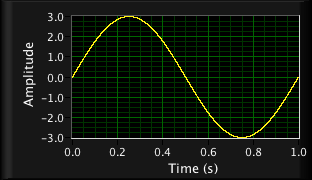
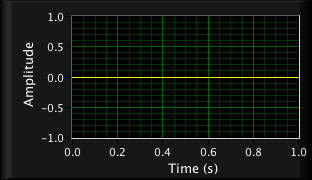
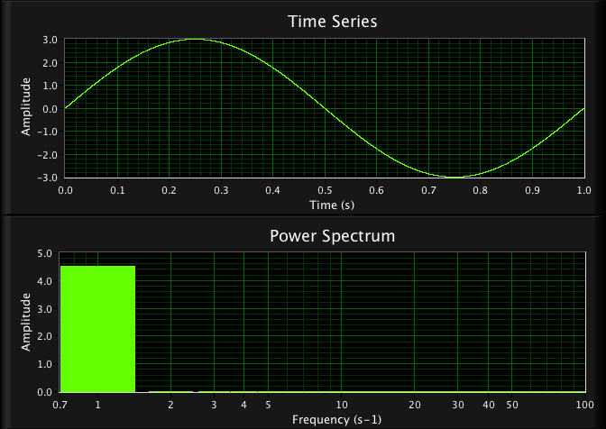

|
GEOB 300 - Fourier transform basics
The Fourier transform is a tool to decompose a time series of turbulent fluctuations into the frequency distribution of its eddies and vice versa.
This web-applet shows how the Fourier transform works qualitatively. Let us 'build' a time series by adding different sine waves with different frequencies (number of cycles per second) and an amplitude of 3. In this demostration, you can only 'mix' (add) two different sine waves torgether. However, in a typical Fourier transform a signal is decomposed into many waves (see Lecture 18, slide 9).
Note, we generate an artificial signal with two base waves so the power spectrum (last graph) shows one or two peaks only. Real atmospheric spectra show all frequencies (see Lecture 18, slide 11 for an example).
|
Frequency Signal 1 (in s-1):

|
+
|
Frequency Signal 2 (in s-1):

|
|
Signal 1 + Signal 2:

|
|